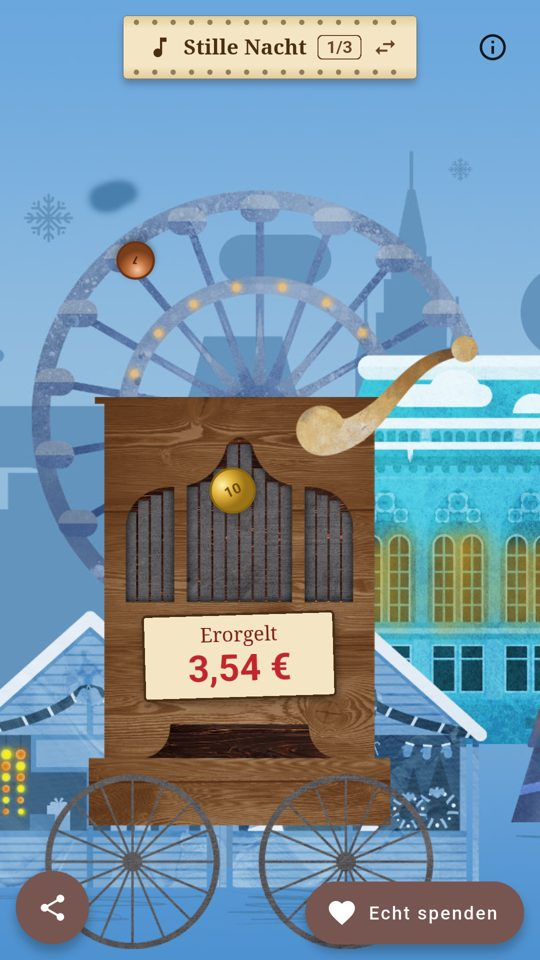
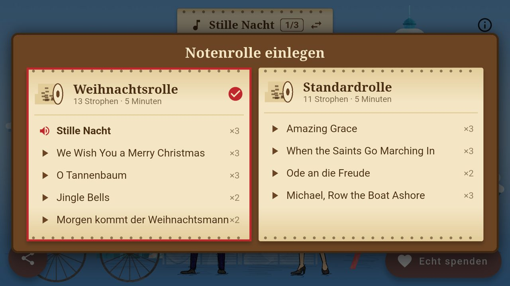

So funktioniert's
- Kurbel drehen – das Tempo der Kurbel ist das Tempo der Musik.
- Wer aufhört zu kurbeln, hört den Blasebalg leerlaufen.
- Zwei Notenrollen: Weihnachtslieder und christliche Lieder, mit mehreren Strophen und einzeln wählbar.
- Beim Spielen fallen Münzen in den Spendentopf.
- Querformat zeigt die ganze Szene, hochkant nur die Orgel.

Notenrollen

Echt spenden
Das erorgelte Geld ist nur gespielt. Wer möchte, kann über „Echt spenden“ an das Korps Chemnitz-Kaßberg der Heilsarmee spenden – die Spende läuft über die Webseite der Heilsarmee und ist steuerlich absetzbar.
Im Browser klingt die Orgel etwas einfacher als in der App: Dort wird vorab aufgenommene Musik abgespielt, in der Android-App spielt ein echter Synthesizer.